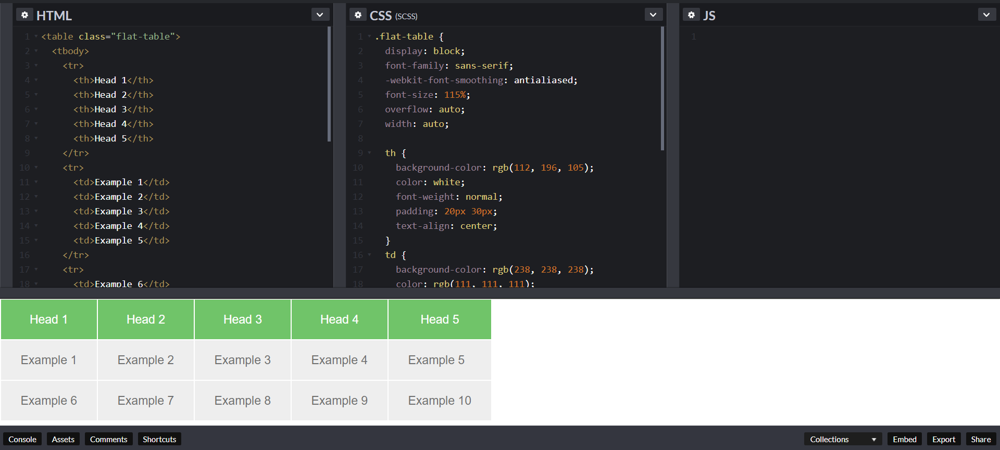

Next, we will make < body > tag.
The HTML < body > is where we add the content which is designed for viewing by human eyes.
This includes text, images, tables, forms and everything else that we see on the internet each day.
How to Add HTML Headings to Your Webpage
In HTML, heading are written in the following elements
- < h1 >
- < h2 >
- < h3 >
- < h4 >
- < h5 >
- < h6 >
As you might have guessed < h1 > and < h2 > should be used for the most important titles, while the remaining tags should be used for sub-headings and less important text.
Search engine bots use this order when deciphering which information is most important on a page.
Creating Your Heading
Let’s try it out. On a new line in the HTML editor, type:
< h1 > Welcome to My Page < /h1 >
And hit save. We will save this file as “index.html” in a new folder called “my webpage.”
The Moment of Truth: Click the newly saved file and your first ever web page should open in your default browser. It may not be pretty it’s yours… all yours.
Well let’s not get carried away; we’ve still got loads of great features that we can add to your page.
Other Key Elements
The are as follows:
| Element |
Meaning |
Purpose |
| < b > |
Bold |
Highlight important information |
| < strong > |
Strong |
Similarly to bold, to highlight key text |
| < i > |
Italic |
To denote text |
| < em > |
Emphasized Text |
Usually used as image captions |
| < mark > |
Marked text |
Highlight the background of the text |
| < small > |
Small text |
To shrink the text |
| < strike > |
Strike Out |
To place a horizontal line across the text |
| < u > |
Underline Text |
Used for link or text highlights |
| < ins > |
Inserted Text |
Displayed with an underline to show an inserted text |
| < sub > |
Subscript Text |
Typographical stylistic choice |
| < sup > |
Superscript Text |
Another typographical stylistic choice |
***These tags must be opened and closed around the text in question***
How To Add Link in HTML
As you may have noticed, the internet is made up of lots of links.
Almost everything you click on while surfing the web is a link takes you to another page within the website you are visiting or to an external site.
Links are included in an attribute opened by the < a > tag. This element is the first that we’ve met which uses an attribute and so it looks different to previously mentioned tags.
The Anchor Tag
The < a > (or anchor) opening tag is written in the format:
< a href ="https://blogging.com/how-to-start-a-blog/" >Your Link Text Here < /a >
The first part of the attribute points to the page that will open once the link is clicked.
Meanwhile, the second part of the attribute contains the text which will be displayed to a visitor in order to entice them to click on that link.
If you are building your own website then you will most likely host all of your pages on professional web hosting. In this case, internal links on your website will < a href=”mylinkedpage.html” >Linktle Here< /a> .
How To Add Images In HTML
In today’s modern digital world, images are everything. The < img > tag has everything you need to display images on your site. Much like the < a > anchor element, < img > also contains an attribute.
The attribute features information for your computer regarding the source, height, width and alt text of the image.
Styling and Formats
You can check the file type of an image by right-clicking the item and selecting ‘Properties’.
You can also define borders and other styles around the image using the class attribute.
The file types generally used for image files online are: .jpg, .png, and (less and less) .gif.
Alt text is important to ensure that your site is ranked correctly on search sites and also for visually impaired visitors to your site.
The < img > tag normally is written as follows:
< img src="yourimage.jpg" alt="Describe the image" height="X" width="X" >
How To Make an HTML List
In web design, there are 3 different types of lists which you may wish to add to your site.
Ordered List
The first is an < ol >: This is an ordered list of contents. For example:
- An item
- Another item
- Another goes here
Inside the < ol > tag we list each item on the list inside < li > < /li > tags
For example:
< ol >
< li >An item< /li >
< li >Another item< /li >
< li >Another goes here< /li >
< /ol >
Unordered List
The second type of list that you may wish to include is an < ul > unordered list. This is better known as a bullet point list and contains no numbers.
An example of this is:
< ul >
< li >This is< /li >
< li >An unordered< /li >
< li >List< /li >
< /ul >
Definition List
Finally, you may wish to include a definition list < dl > on your page. An example of a < dl > list is as follows:
- HTML
- Hypertext markup language is a programming language used to create web pages and is rendered by a web browser.
The code used for the above is as follows:
< dl >
< dt >Item< /dt >
< dd >The definition goes here< /dd >
< /dl >
How To Add Tables In HTML

Tables can be styled in various ways – Codepen.io offers live previews to keep track of changes.
Another way to keep your website looking neat and orderly is through the use of a table.
This is definitely the most complicated part of this tutorial, however, learning it will certainly pay off in the long-run.
With this in mind, tables can still be a useful way to present content on your page.
Do not use a table to layout your website. Search engines hate it and it is generally a bad idea. Just… don’t. See our CSS tutorial, instead.
What Does a Table Consist Of?
When drawing a table we must open an element with the < table > opening tag. Inside this tag, we structure the table using the table rows, < tr >, and cells, < td >.
An example of an HTML table is as follows:
< table >
< tr >
< td >Row 1 - Column 1< /td >
< td >Row 1 - Colunm 2< /td >
< td >Row 1 - Column 3< /td >
< /tr >
< tr >
< td >Row 2 - Column 1< /td >
< td >Row 2 - Column 2< /td >
< td >Row 2 - Column 3< /td >
< /tr >
< /table >
This will produce a 2-row table with 3 cells in each row.